Last updated: 2018-10-24
workflowr checks: (Click a bullet for more information) ✔ R Markdown file: up-to-date
Great! Since the R Markdown file has been committed to the Git repository, you know the exact version of the code that produced these results.
✔ Environment: empty
Great job! The global environment was empty. Objects defined in the global environment can affect the analysis in your R Markdown file in unknown ways. For reproduciblity it’s best to always run the code in an empty environment.
✔ Seed:
set.seed(12345)
The command set.seed(12345) was run prior to running the code in the R Markdown file. Setting a seed ensures that any results that rely on randomness, e.g. subsampling or permutations, are reproducible.
✔ Session information: recorded
Great job! Recording the operating system, R version, and package versions is critical for reproducibility.
✔ Repository version: 00b1020
wflow_publish or wflow_git_commit). workflowr only checks the R Markdown file, but you know if there are other scripts or data files that it depends on. Below is the status of the Git repository when the results were generated:
Ignored files:
Ignored: .DS_Store
Ignored: .Rhistory
Ignored: .Rproj.user/
Ignored: data/.DS_Store
Ignored: output/.DS_Store
Untracked files:
Untracked: KalistoAbundance18486.txt
Untracked: analysis/genometrack_figs.Rmd
Untracked: analysis/ncbiRefSeq_sm.sort.mRNA.bed
Untracked: analysis/snake.config.notes.Rmd
Untracked: analysis/verifyBAM.Rmd
Untracked: data/18486.genecov.txt
Untracked: data/APApeaksYL.total.inbrain.bed
Untracked: data/ChromHmmOverlap/
Untracked: data/GM12878.chromHMM.bed
Untracked: data/GM12878.chromHMM.txt
Untracked: data/NuclearApaQTLs.txt
Untracked: data/PeaksUsed/
Untracked: data/RNAkalisto/
Untracked: data/TotalApaQTLs.txt
Untracked: data/Totalpeaks_filtered_clean.bed
Untracked: data/YL-SP-18486-T-combined-genecov.txt
Untracked: data/YL-SP-18486-T_S9_R1_001-genecov.txt
Untracked: data/apaExamp/
Untracked: data/bedgraph_peaks/
Untracked: data/bin200.5.T.nuccov.bed
Untracked: data/bin200.Anuccov.bed
Untracked: data/bin200.nuccov.bed
Untracked: data/clean_peaks/
Untracked: data/comb_map_stats.csv
Untracked: data/comb_map_stats.xlsx
Untracked: data/comb_map_stats_39ind.csv
Untracked: data/combined_reads_mapped_three_prime_seq.csv
Untracked: data/diff_iso_trans/
Untracked: data/ensemble_to_genename.txt
Untracked: data/filtered_APApeaks_merged_allchrom_refseqTrans.closest2End.bed
Untracked: data/filtered_APApeaks_merged_allchrom_refseqTrans.closest2End.noties.bed
Untracked: data/first50lines_closest.txt
Untracked: data/gencov.test.csv
Untracked: data/gencov.test.txt
Untracked: data/gencov_zero.test.csv
Untracked: data/gencov_zero.test.txt
Untracked: data/gene_cov/
Untracked: data/joined
Untracked: data/leafcutter/
Untracked: data/merged_combined_YL-SP-threeprimeseq.bg
Untracked: data/mol_overlap/
Untracked: data/mol_pheno/
Untracked: data/nom_QTL/
Untracked: data/nom_QTL_opp/
Untracked: data/nom_QTL_trans/
Untracked: data/nuc6up/
Untracked: data/other_qtls/
Untracked: data/peakPerRefSeqGene/
Untracked: data/perm_QTL/
Untracked: data/perm_QTL_opp/
Untracked: data/perm_QTL_trans/
Untracked: data/reads_mapped_three_prime_seq.csv
Untracked: data/smash.cov.results.bed
Untracked: data/smash.cov.results.csv
Untracked: data/smash.cov.results.txt
Untracked: data/smash_testregion/
Untracked: data/ssFC200.cov.bed
Untracked: data/temp.file1
Untracked: data/temp.file2
Untracked: data/temp.gencov.test.txt
Untracked: data/temp.gencov_zero.test.txt
Untracked: output/picard/
Untracked: output/plots/
Untracked: output/qual.fig2.pdf
Unstaged changes:
Modified: analysis/28ind.peak.explore.Rmd
Modified: analysis/39indQC.Rmd
Modified: analysis/PeakToGeneAssignment.Rmd
Modified: analysis/cleanupdtseq.internalpriming.Rmd
Modified: analysis/dif.iso.usage.leafcutter.Rmd
Modified: analysis/diff_iso_pipeline.Rmd
Modified: analysis/explore.filters.Rmd
Modified: analysis/overlapMolQTL.Rmd
Modified: analysis/overlap_qtls.Rmd
Modified: analysis/peakOverlap_oppstrand.Rmd
Modified: analysis/pheno.leaf.comb.Rmd
Modified: analysis/test.max2.Rmd
Modified: code/Snakefile
This analysis is similar to the Characterize Total APAqtl analysis
I would like to study:
Library
library(workflowr)This is workflowr version 1.1.1
Run ?workflowr for help getting startedlibrary(reshape2)
library(tidyverse)── Attaching packages ─────────────────────────────────────────────────────────────── tidyverse 1.2.1 ──✔ ggplot2 3.0.0 ✔ purrr 0.2.5
✔ tibble 1.4.2 ✔ dplyr 0.7.6
✔ tidyr 0.8.1 ✔ stringr 1.3.1
✔ readr 1.1.1 ✔ forcats 0.3.0── Conflicts ────────────────────────────────────────────────────────────────── tidyverse_conflicts() ──
✖ dplyr::filter() masks stats::filter()
✖ dplyr::lag() masks stats::lag()library(VennDiagram)Loading required package: gridLoading required package: futile.loggerlibrary(data.table)
Attaching package: 'data.table'The following objects are masked from 'package:dplyr':
between, first, lastThe following object is masked from 'package:purrr':
transposeThe following objects are masked from 'package:reshape2':
dcast, meltlibrary(cowplot)
Attaching package: 'cowplot'The following object is masked from 'package:ggplot2':
ggsavePermuted Results from APA:
I will add a column to this dataframe that will tell me if the association is significant at 10% FDR. This will help me plot based on significance later in the analysis. I am also going to seperate the PID into relevant pieces.
NuclearAPA=read.table("../data/perm_QTL_trans/filtered_APApeaks_merged_allchrom_refseqGenes_pheno_Nuclear_transcript_permResBH.txt", stringsAsFactors = F, header=T) %>% mutate(sig=ifelse(-log10(bh)>=1, 1,0 )) %>% separate(pid, sep = ":", into=c("chr", "start", "end", "id")) %>% separate(id, sep = "_", into=c("gene", "strand", "peak"))
NuclearAPA$sig=as.factor(NuclearAPA$sig)
print(names(NuclearAPA)) [1] "chr" "start" "end" "gene" "strand" "peak" "nvar"
[8] "shape1" "shape2" "dummy" "sid" "dist" "npval" "slope"
[15] "ppval" "bpval" "bh" "sig" I ran the QTL analysis based on the starting position of the gene.
ggplot(NuclearAPA, aes(x=dist, fill=sig, by=sig)) + geom_density(alpha=.5) + labs(title="Distance from snp to TSS", x="Base Pairs") + scale_fill_discrete(guide = guide_legend(title = "Significant QTL")) + scale_fill_brewer(palette="Paired")Scale for 'fill' is already present. Adding another scale for 'fill',
which will replace the existing scale.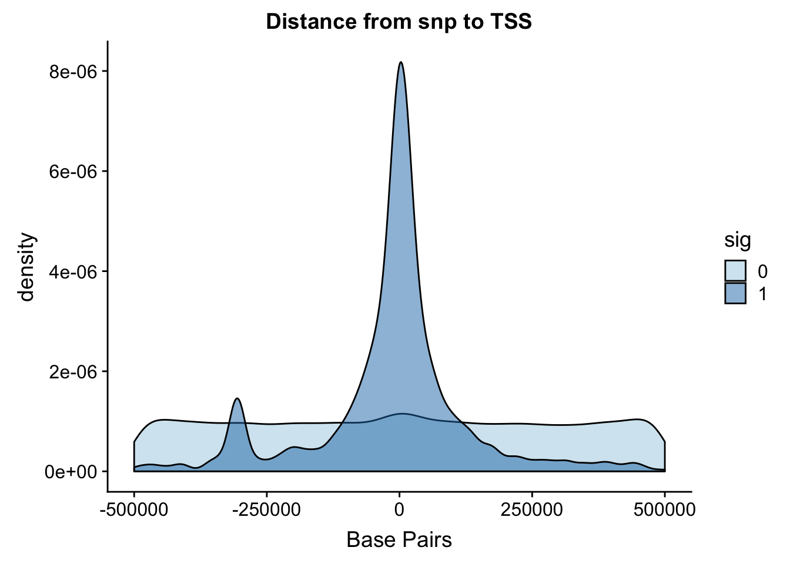
| Version | Author | Date |
|---|---|---|
| de860f0 | Briana Mittleman | 2018-10-24 |
Zoom in to 100,000.
ggplot(NuclearAPA, aes(x=dist, fill=sig, by=sig)) + geom_density(alpha=.5)+coord_cartesian(xlim = c(-150000, 150000)) + scale_fill_brewer(palette="Paired")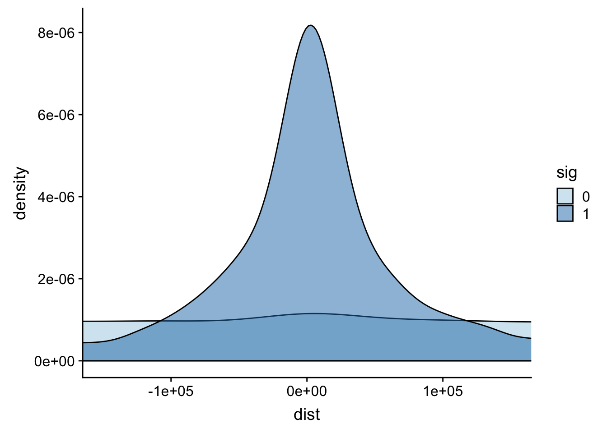
| Version | Author | Date |
|---|---|---|
| de860f0 | Briana Mittleman | 2018-10-24 |
To perform this analysis I need to recover the peak positions.
The peak file I used for the QTL analysis is: /project2/gilad/briana/threeprimeseq/data/mergedPeaks_comb/filtered_APApeaks_merged_allchrom_refseqTrans.noties_sm.fixed.bed
peaks=read.table("../data/PeaksUsed/filtered_APApeaks_merged_allchrom_refseqTrans.noties_sm.fixed.bed", col.names = c("chr", "peakStart", "peakEnd", "PeakNum", "PeakScore", "Strand", "Gene")) %>% mutate(peak=paste("peak", PeakNum,sep="")) %>% mutate(PeakCenter=peakStart+ (peakEnd- peakStart))I want to join the peak start to the NuclearAPA file but the peak column. I will then create a column that is snppos-peakcenter.
NuclearAPA_peakdist= NuclearAPA %>% inner_join(peaks, by="peak") %>% separate(sid, into=c("snpCHR", "snpLOC"), by=":")
NuclearAPA_peakdist$snpLOC= as.numeric(NuclearAPA_peakdist$snpLOC)
NuclearAPA_peakdist= NuclearAPA_peakdist %>% mutate(DisttoPeak= snpLOC-PeakCenter)Plot this by significance.
ggplot(NuclearAPA_peakdist, aes(x=DisttoPeak, fill=sig, by=sig)) + geom_density(alpha=.5) + labs(title="Distance from snp peak", x="log10 absolute value Distance to Peak") + scale_fill_discrete(guide = guide_legend(title = "Significant QTL")) + scale_fill_brewer(palette="Paired")Scale for 'fill' is already present. Adding another scale for 'fill',
which will replace the existing scale.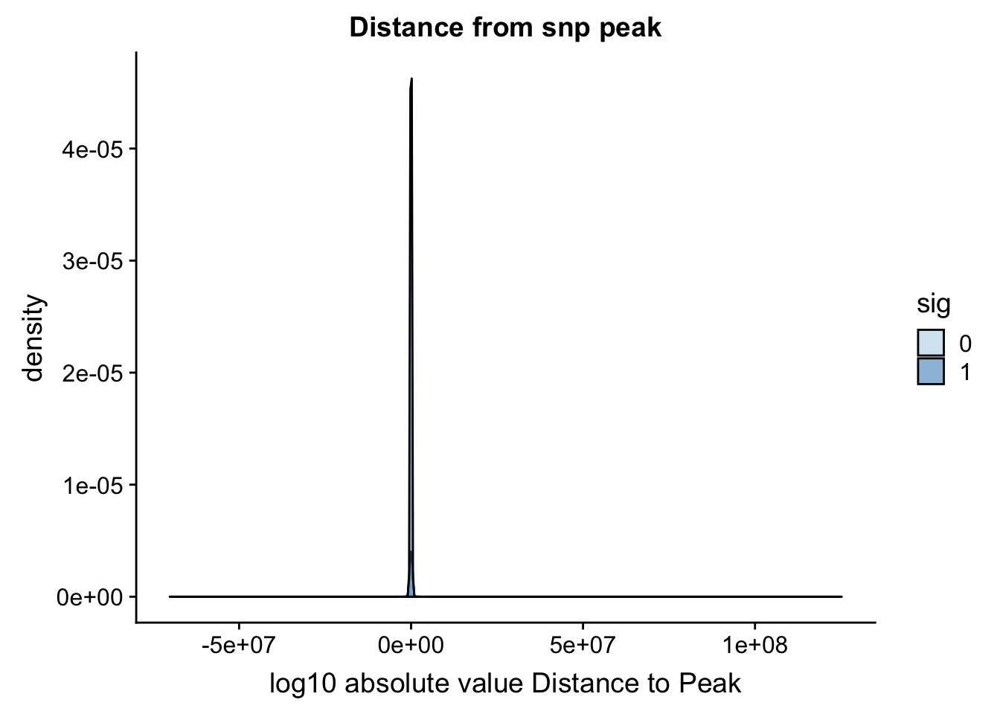
| Version | Author | Date |
|---|---|---|
| de860f0 | Briana Mittleman | 2018-10-24 |
Look at the summarys based on significance:
NuclearAPA_peakdist_sig=NuclearAPA_peakdist %>% filter(sig==1)
NuclearAPA_peakdist_notsig=NuclearAPA_peakdist %>% filter(sig==0)
summary(NuclearAPA_peakdist_sig$DisttoPeak) Min. 1st Qu. Median Mean 3rd Qu. Max.
-1003786 -17579 -91 -8818 6588 891734 summary(NuclearAPA_peakdist_notsig$DisttoPeak) Min. 1st Qu. Median Mean 3rd Qu. Max.
-70147526 -265059 -2067 7263 255169 125172864 ggplot(NuclearAPA_peakdist, aes(y=DisttoPeak,x=sig, fill=sig, by=sig)) + geom_boxplot() + scale_fill_discrete(guide = guide_legend(title = "Significant QTL")) + scale_fill_brewer(palette="Paired")Scale for 'fill' is already present. Adding another scale for 'fill',
which will replace the existing scale.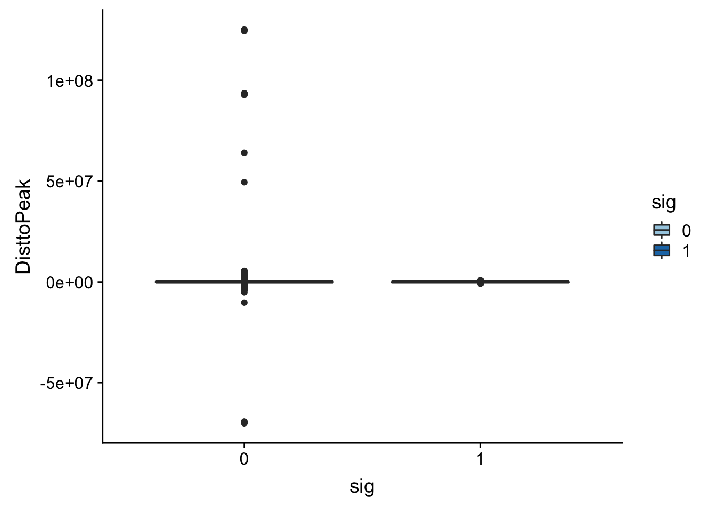
| Version | Author | Date |
|---|---|---|
| de860f0 | Briana Mittleman | 2018-10-24 |
Look like there are some outliers that are really far. I will remove variants greater than 1*10^6th away
NuclearAPA_peakdist_filt=NuclearAPA_peakdist %>% filter(abs(DisttoPeak) <= 1*(10^6))
ggplot(NuclearAPA_peakdist_filt, aes(y=DisttoPeak,x=sig, fill=sig, by=sig)) + geom_boxplot() + scale_fill_discrete(guide = guide_legend(title = "Significant QTL")) + facet_grid(.~strand) + scale_fill_brewer(palette="Paired")Scale for 'fill' is already present. Adding another scale for 'fill',
which will replace the existing scale.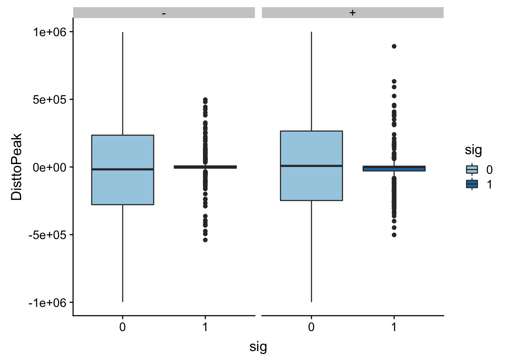
| Version | Author | Date |
|---|---|---|
| de860f0 | Briana Mittleman | 2018-10-24 |
ggplot(NuclearAPA_peakdist_filt, aes(x=DisttoPeak, fill=sig, by=sig)) + geom_density() + scale_fill_discrete(guide = guide_legend(title = "Significant QTL")) + facet_grid(.~strand)+ scale_fill_brewer(palette="Paired")Scale for 'fill' is already present. Adding another scale for 'fill',
which will replace the existing scale.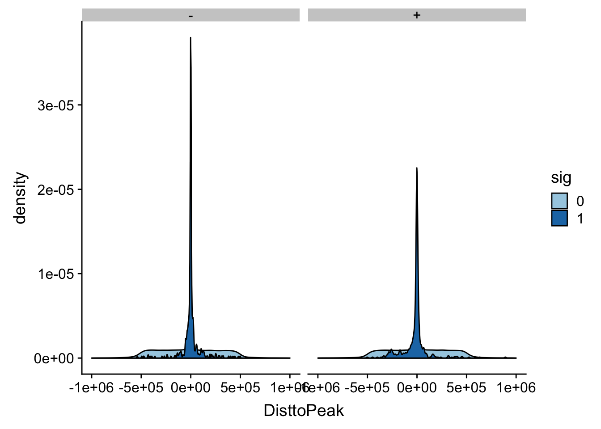
| Version | Author | Date |
|---|---|---|
| de860f0 | Briana Mittleman | 2018-10-24 |
I am going to plot a violin plot for just the significant ones.
ggplot(NuclearAPA_peakdist_sig, aes(x=DisttoPeak)) + geom_density()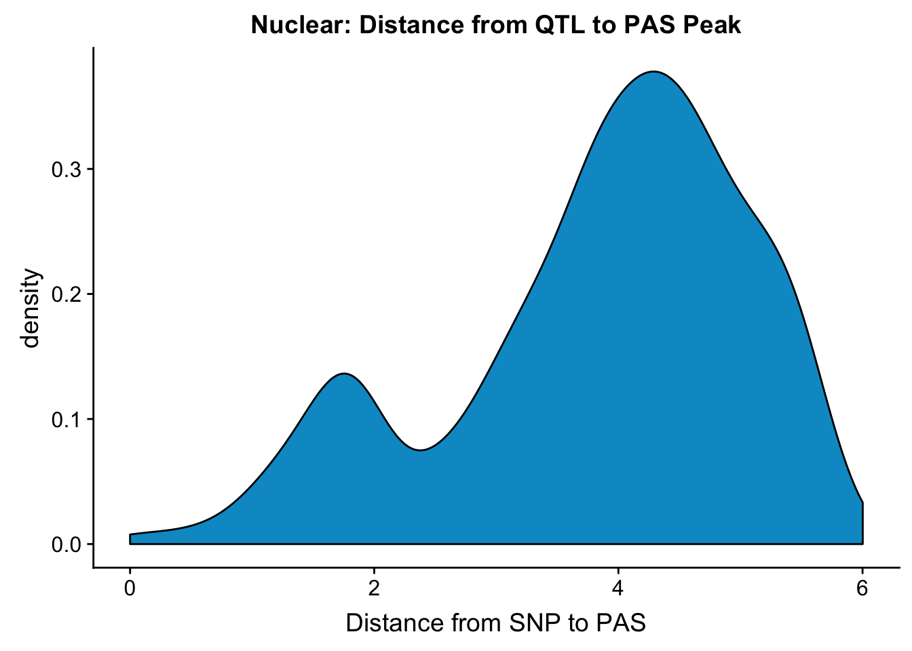
| Version | Author | Date |
|---|---|---|
| de860f0 | Briana Mittleman | 2018-10-24 |
Within 1000 bases of the peak center.
NuclearAPA_peakdist_sig %>% filter(abs(DisttoPeak) < 1000) %>% nrow()[1] 192NuclearAPA_peakdist_sig %>% filter(abs(DisttoPeak) < 10000) %>% nrow()[1] 420NuclearAPA_peakdist_sig %>% filter(abs(DisttoPeak) < 100000) %>% nrow()[1] 726192 QTLs are within 1000 bp, 420 are within 10000, and 726 are within 100,000bp
Next I want to pull in the expression values and compare the expression of genes with a nuclear APA qtl in comparison to genes without one. I will also need to pull in the gene names file to add in the gene names from the ensg ID.
Remove the # from the file.
expression=read.table("../data/mol_pheno/fastqtl_qqnorm_RNAseq_phase2.fixed.noChr.txt", header = T,stringsAsFactors = F)
expression_mean=apply(expression[,5:73],1,mean,na.rm=TRUE)
expression_var=apply(expression[,5:73],1,var,na.rm=TRUE)
expression$exp.mean= expression_mean
expression$exp.var=expression_var
expression= expression %>% separate(ID, into=c("Gene.stable.ID", "ver"), sep ="[.]")Now I can pull in the names and join the dataframes.
geneNames=read.table("../data/ensemble_to_genename.txt", sep="\t", header=T,stringsAsFactors = F)
expression=expression %>% inner_join(geneNames,by="Gene.stable.ID")
expression=expression %>% select(Chr, start, end, Gene.name, exp.mean,exp.var) %>% rename("gene"=Gene.name)Now I can join this with the qtls.
NuclearAPA_wExp=NuclearAPA %>% inner_join(expression, by="gene") gene_wQTL_N= NuclearAPA_wExp %>% group_by(gene) %>% summarise(sig_gene=sum(as.numeric(as.character(sig)))) %>% ungroup() %>% inner_join(expression, by="gene") %>% mutate(sigGeneFactor=ifelse(sig_gene>=1, 1,0))
gene_wQTL_N$sigGeneFactor= as.factor(as.character(gene_wQTL_N$sigGeneFactor))
summary(gene_wQTL_N$sigGeneFactor) 0 1
4589 607 There are 607 genes with a QTL
ggplot(gene_wQTL_N, aes(x=exp.mean, by=sigGeneFactor, fill=sigGeneFactor)) + geom_density(alpha=.3) +labs(title="Mean in RNA expression by genes with significant QTL", x="Mean in normalized expression") + scale_fill_discrete(guide = guide_legend(title = "Significant QTL"))+ scale_fill_brewer(palette="Paired")Scale for 'fill' is already present. Adding another scale for 'fill',
which will replace the existing scale.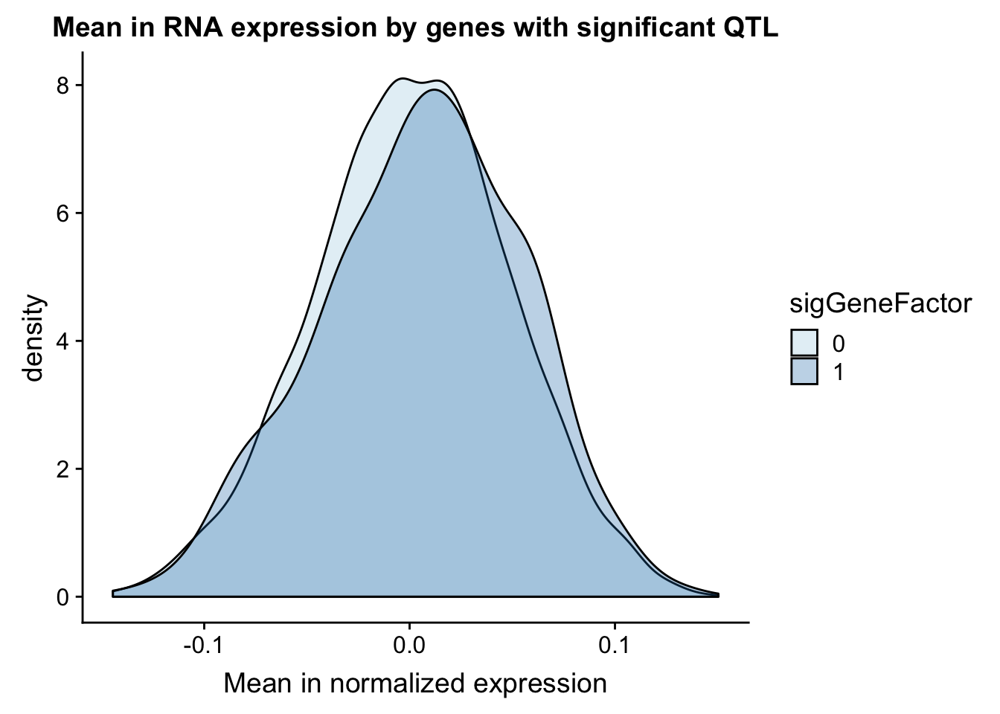
| Version | Author | Date |
|---|---|---|
| de860f0 | Briana Mittleman | 2018-10-24 |
I can do a similar analysis but test the variance in the gene expression.
ggplot(gene_wQTL_N, aes(x=exp.var, by=sigGeneFactor, fill=sigGeneFactor)) + geom_density(alpha=.3) + labs(title="Varriance in RNA expression by genes with significant QTL", x="Variance in normalized expression") + scale_fill_discrete(guide = guide_legend(title = "Significant QTL"))+ scale_fill_brewer(palette="Paired")Scale for 'fill' is already present. Adding another scale for 'fill',
which will replace the existing scale.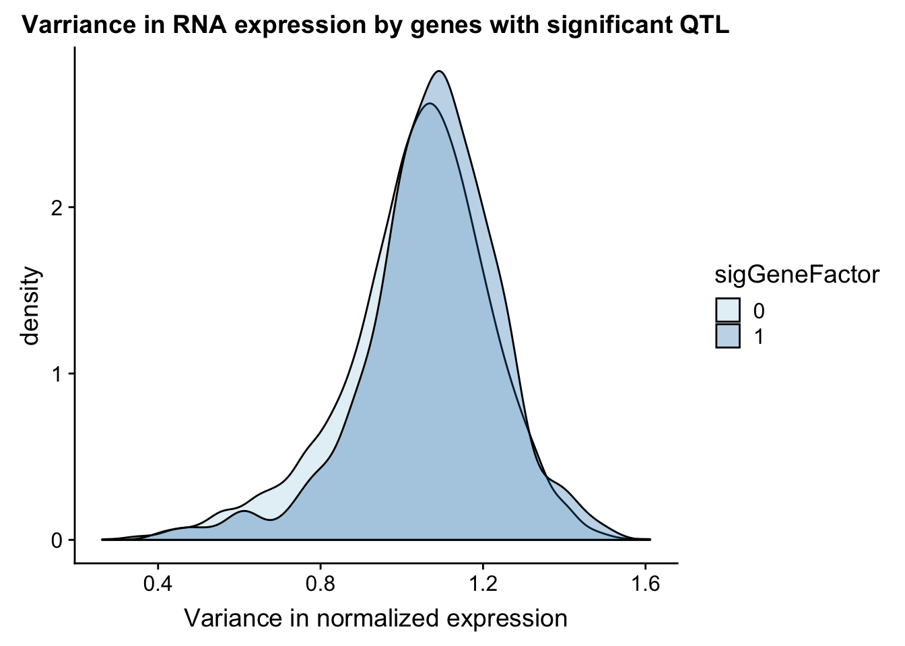
| Version | Author | Date |
|---|---|---|
| de860f0 | Briana Mittleman | 2018-10-24 |
I can also look at peak coverage for peaks with QLTs and those without. I will first look at this on peak level then mvoe to gene level. The peak scores come from the coverage in the peaks.
The NuclearAPA_peakdist data frame has the information I need for this.
ggplot(NuclearAPA_peakdist, aes(x=PeakScore,fill=sig,by=sig)) + geom_density(alpha=.5)+ scale_x_log10() + labs(title="Peak score by significance") + scale_fill_brewer(palette="Paired")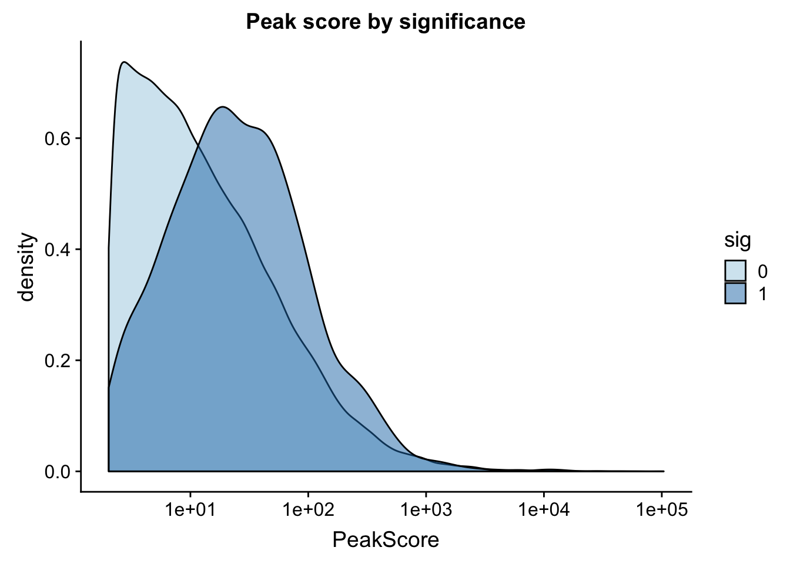
| Version | Author | Date |
|---|---|---|
| de860f0 | Briana Mittleman | 2018-10-24 |
This is expected. It makes sense that we have more power to detect qtls in higher expressed peaks. This leads me to believe that filtering out low peaks may add power but will not mitigate the effect. ##Where are the SNPs
I created the significant SNP files in the Characterize Total APAqtl analysis analysis.
chromHmm=read.table("../data/ChromHmmOverlap/chromHMM_regions.txt", col.names = c("number", "name"), stringsAsFactors = F)
NuclearOverlapHMM=read.table("../data/ChromHmmOverlap/Nuc_overlapHMM.bed", col.names=c("chrom", "start", "end", "sid", "significance", "strand", "number"))
NuclearOverlapHMM$number=as.integer(NuclearOverlapHMM$number)
NuclearOverlapHMM_names=NuclearOverlapHMM %>% left_join(chromHmm, by="number")ggplot(NuclearOverlapHMM_names, aes(x=name)) + geom_bar() + labs(title="ChromHMM labels for Nuclear APAQtls" , y="Number of SNPs", x="Region")+theme(axis.text.x = element_text(angle = 90, hjust = 1))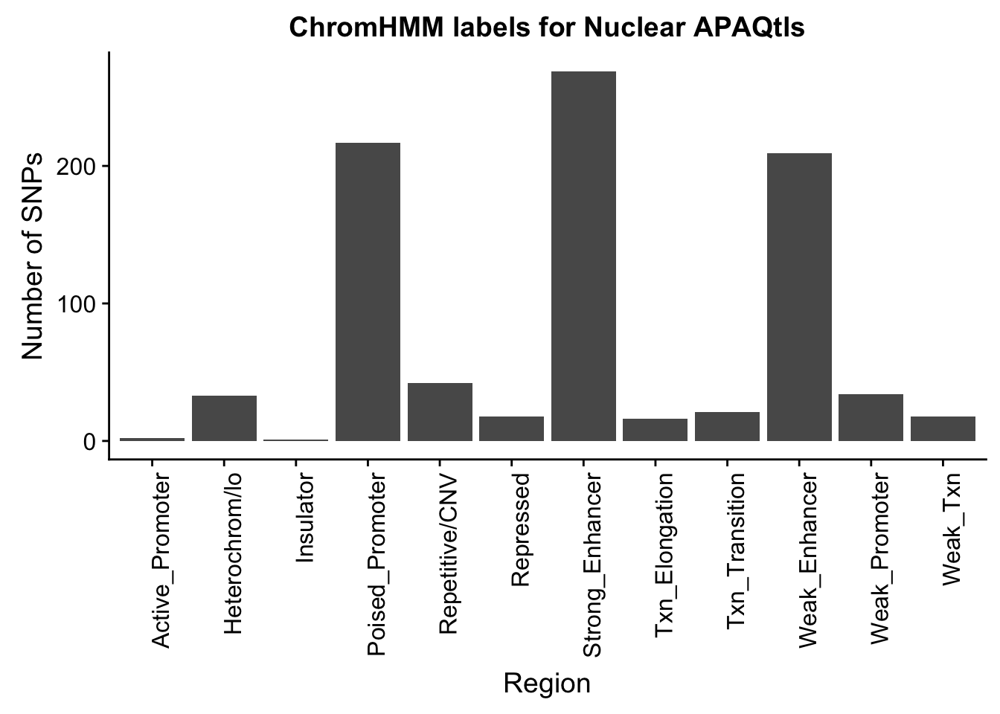
| Version | Author | Date |
|---|---|---|
| de860f0 | Briana Mittleman | 2018-10-24 |
I do still need to get 880 random snps.
shuf -n 880 /project2/gilad/briana/threeprimeseq/data/nominal_APAqtl_trans/filtered_APApeaks_merged_allchrom_refseqGenes_pheno_Nuclear_NomRes.txt > /project2/gilad/briana/threeprimeseq/data/nominal_APAqtl_trans/randomSnps/ApaQTL_nuclear_Random880.txt
Run QTLNOMres2SigSNPbed.py with nuclear 880 and sort output
import pybedtools
RANDnuc=pybedtools.BedTool('/project2/gilad/briana/threeprimeseq/data/nominal_APAqtl_trans/randomSnps/ApaQTL_nuclear_Random880.sort.bed')
hmm=pybedtools.BedTool("/project2/gilad/briana/genome_anotation_data/GM12878.chromHMM.sort.bed")
#map hmm to snps
NucRnad_overlapHMM=RANDnuc.map(hmm, c=4)
#save results
NucRnad_overlapHMM.saveas("/project2/gilad/briana/threeprimeseq/data/nominal_APAqtl_trans/randomSnps/ApaQTL_nuclear_Random_overlapHMM.bed")
NuclearRandOverlapHMM=read.table("../data/ChromHmmOverlap/ApaQTL_nuclear_Random_overlapHMM.bed", col.names=c("chrom", "start", "end", "sid", "significance", "strand", "number"))
NuclearRandOverlapHMM_names=NuclearRandOverlapHMM %>% left_join(chromHmm, by="number")ggplot(NuclearRandOverlapHMM_names, aes(x=name)) + geom_bar() + labs(title="ChromHMM labels for Nuclear APAQtls (Random)" , y="Number of SNPs", x="Region")+theme(axis.text.x = element_text(angle = 90, hjust = 1))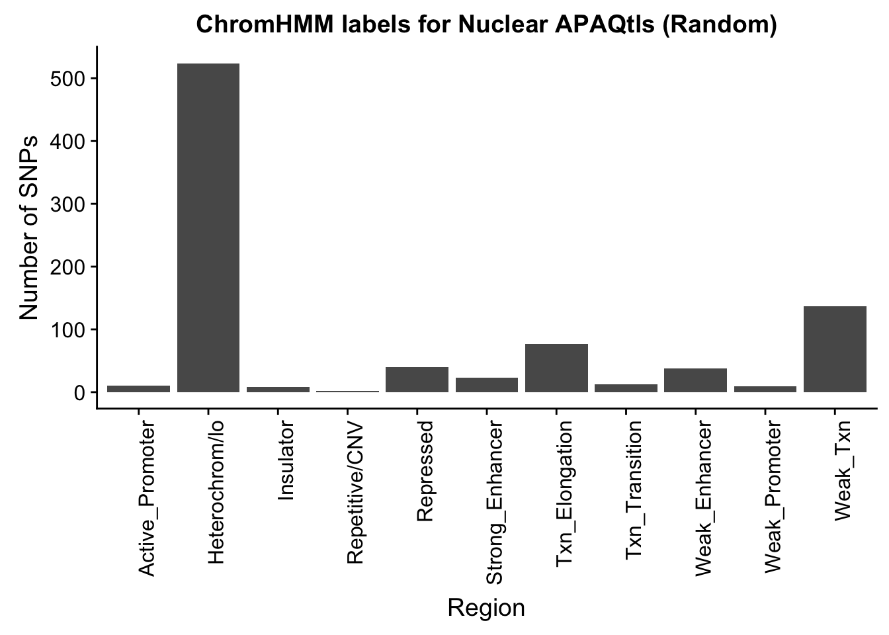
| Version | Author | Date |
|---|---|---|
| de860f0 | Briana Mittleman | 2018-10-24 |
To put this on the same plot I can count the number in each then plot them next to eachother.
random_perChromHMM_nuc=NuclearRandOverlapHMM_names %>% group_by(name) %>% summarise(Random=n())
sig_perChromHMM_nuc= NuclearOverlapHMM_names %>% group_by(name) %>% summarise(Nuclear_QTLs=n())
perChrommHMM_nuc=random_perChromHMM_nuc %>% full_join(sig_perChromHMM_nuc, by="name", ) %>% replace_na(list(Random=0,Total_QTLs=0))
perChrommHMM_nuc_melt=melt(perChrommHMM_nuc, id.vars="name")
names(perChrommHMM_nuc_melt)=c("Region","Set", "N_Snps" )chromenrichNuclearplot=ggplot(perChrommHMM_nuc_melt, aes(x=Region, y=N_Snps, by=Set, fill=Set)) + geom_bar(position="dodge", stat="identity") +theme(axis.text.x = element_text(angle = 90, hjust = 1)) + labs(title="Enrichment of Nuclear QTLs by chromatin region", y="Number of Snps", x="Chromatin Region") + scale_fill_brewer(palette="Paired")
chromenrichNuclearplot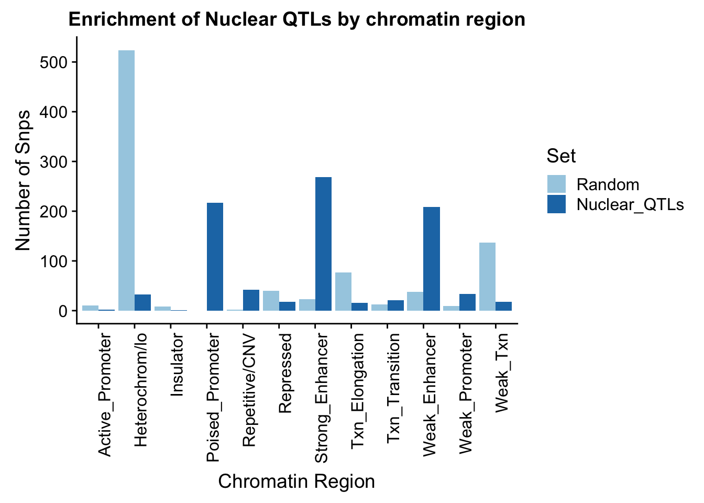
| Version | Author | Date |
|---|---|---|
| de860f0 | Briana Mittleman | 2018-10-24 |
ggsave("../output/plots/ChromHmmEnrich_Nuclear.png", chromenrichNuclearplot)Saving 7 x 5 in imageI want to make a plot with the enrichment by fraction. I am first going to get an enrichemnt score for each bin naively by looking at the QTL/random in each category.
perChrommHMM_nuc$Random= as.integer(perChrommHMM_nuc$Random)
perChrommHMM_nuc_enr=perChrommHMM_nuc %>% mutate(Nuclear=Nuclear_QTLs-Random)
perChrommHMM_tot_enr=read.table("../data/ChromHmmOverlap/perChrommHMM_Total_enr.txt",stringsAsFactors = F,header = T)allenrich=perChrommHMM_tot_enr %>% inner_join(perChrommHMM_nuc_enr, by="name") %>% select(name, Total, Nuclear)
allenrich_melt=melt(allenrich, id.vars="name")plot it
chromenrichBoth=ggplot(allenrich_melt, aes(x=name, by=variable, y=value, fill=variable)) + geom_bar(stat="identity", position = "dodge") + theme(axis.text.x = element_text(angle = 90, hjust = 1)) + labs(title="QTL-Random for each bin by fraction", y="Num QTL SNPs - Num Random SNPs") + scale_fill_manual(values=c("darkviolet", "deepskyblue3"))
ggsave("../output/plots/ChromHmmEnrich_BothFrac.png", chromenrichBoth)Saving 7 x 5 in imagesessionInfo()R version 3.5.1 (2018-07-02)
Platform: x86_64-apple-darwin15.6.0 (64-bit)
Running under: macOS Sierra 10.12.6
Matrix products: default
BLAS: /Library/Frameworks/R.framework/Versions/3.5/Resources/lib/libRblas.0.dylib
LAPACK: /Library/Frameworks/R.framework/Versions/3.5/Resources/lib/libRlapack.dylib
locale:
[1] en_US.UTF-8/en_US.UTF-8/en_US.UTF-8/C/en_US.UTF-8/en_US.UTF-8
attached base packages:
[1] grid stats graphics grDevices utils datasets methods
[8] base
other attached packages:
[1] bindrcpp_0.2.2 cowplot_0.9.3 data.table_1.11.8
[4] VennDiagram_1.6.20 futile.logger_1.4.3 forcats_0.3.0
[7] stringr_1.3.1 dplyr_0.7.6 purrr_0.2.5
[10] readr_1.1.1 tidyr_0.8.1 tibble_1.4.2
[13] ggplot2_3.0.0 tidyverse_1.2.1 reshape2_1.4.3
[16] workflowr_1.1.1
loaded via a namespace (and not attached):
[1] tidyselect_0.2.4 haven_1.1.2 lattice_0.20-35
[4] colorspace_1.3-2 htmltools_0.3.6 yaml_2.2.0
[7] rlang_0.2.2 R.oo_1.22.0 pillar_1.3.0
[10] glue_1.3.0 withr_2.1.2 R.utils_2.7.0
[13] RColorBrewer_1.1-2 lambda.r_1.2.3 modelr_0.1.2
[16] readxl_1.1.0 bindr_0.1.1 plyr_1.8.4
[19] munsell_0.5.0 gtable_0.2.0 cellranger_1.1.0
[22] rvest_0.3.2 R.methodsS3_1.7.1 evaluate_0.11
[25] labeling_0.3 knitr_1.20 broom_0.5.0
[28] Rcpp_0.12.19 formatR_1.5 backports_1.1.2
[31] scales_1.0.0 jsonlite_1.5 hms_0.4.2
[34] digest_0.6.17 stringi_1.2.4 rprojroot_1.3-2
[37] cli_1.0.1 tools_3.5.1 magrittr_1.5
[40] lazyeval_0.2.1 futile.options_1.0.1 crayon_1.3.4
[43] whisker_0.3-2 pkgconfig_2.0.2 xml2_1.2.0
[46] lubridate_1.7.4 assertthat_0.2.0 rmarkdown_1.10
[49] httr_1.3.1 rstudioapi_0.8 R6_2.3.0
[52] nlme_3.1-137 git2r_0.23.0 compiler_3.5.1
This reproducible R Markdown analysis was created with workflowr 1.1.1